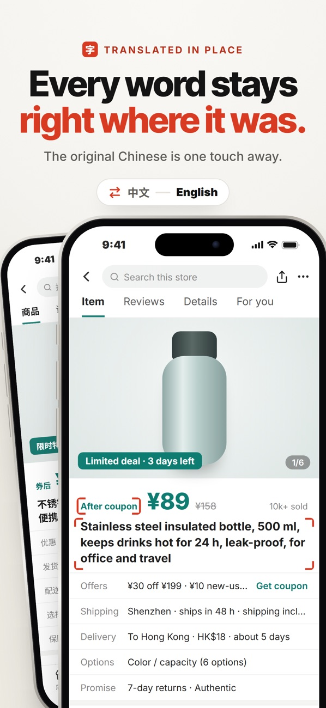

How to use Taobao in English
Taobao is where most of China shops, and it is one of the hardest apps for a newcomer: even when the menus are readable, everything sellers write (product titles, size charts, options, reviews and the chat with the shop) is in Chinese.

What is actually in Chinese
Taobao's own buttons are the easy part. The hard part is what sellers write themselves:
- Product titles and options: colour, size and "version" choices, often packed with abbreviations.
- Size charts and detail images: the most important information is usually inside a long picture, so copy-paste translation can't reach it.
- Reviews and Q&A: where you find out whether the item matches the photos.
- Seller chat: delivery times, invoices, returns.
- Order and logistics pages: status updates and courier messages.
Option 1: copy, paste, translate
Long-press a title, copy it, open a translator, paste, read and come back. It works for one line of text, but it is slow for a whole page, and it can't read text that is inside images, which is where size charts live.
Hanzi · read any Taobao screen in English with one tap, right on top of the app. On-device, nothing uploaded.
Option 2: camera or screenshot translation
You can take a screenshot and open it in a photo translator. That reads images too, but you leave Taobao every time, and you're reading a translated copy instead of the page you're on.
Option 3: translate the screen in place with Hanzi
Hanzi was built for this. On any Taobao page, you trigger it with one tap (the floating on-screen button, or Back Tap) and the screen you're on comes back in English, drawn on top of the app, including the text inside product pictures and size charts.
- Open the product, the reviews or the seller chat in Taobao.
- Tap the floating Hanzi button (or the back of your iPhone twice, if you set up Back Tap).
- Read the English version on top of the page; scroll and tap again for the next part.
Recognition and translation run on the phone, so your screen is never uploaded.
Tips that save money on Taobao
- Read the size chart image, not the size letters: Chinese sizes often run one or two sizes smaller.
- Check the option you selected before paying: the cheapest price shown is often for a different version.
- Read the reviews with photos: they tell you more than the listing.
- Before ordering, ask the seller in chat if you're not sure; translating their reply in place makes this quick.
Hanzi · read any Taobao screen in English with one tap, right on top of the app. On-device, nothing uploaded.